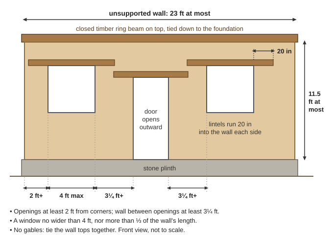
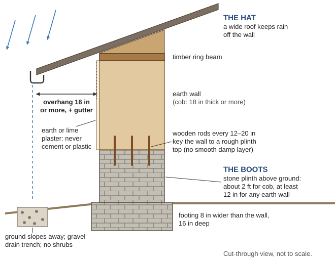
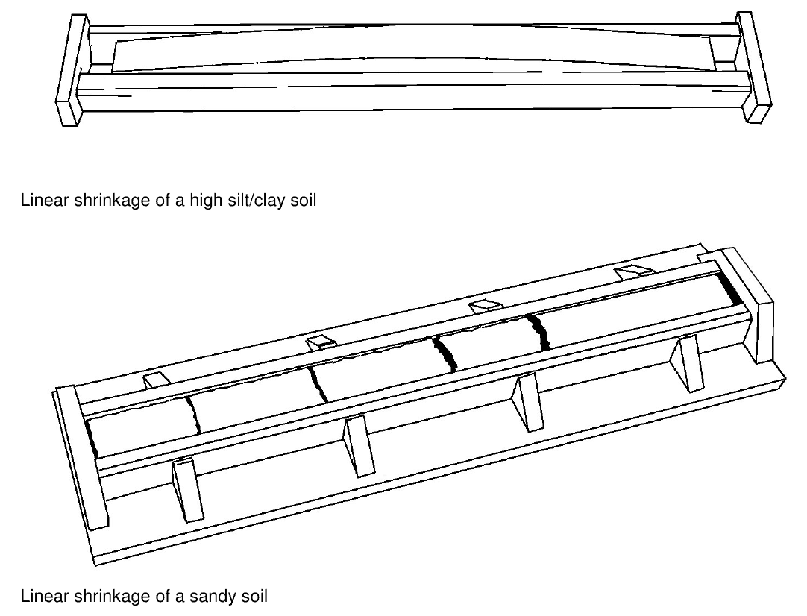
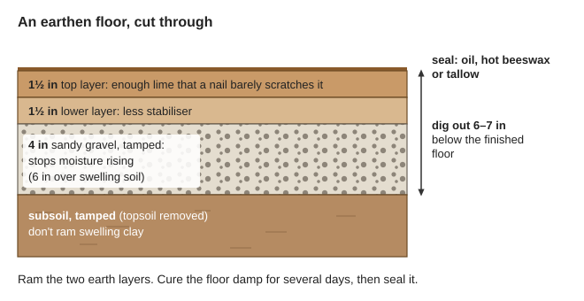
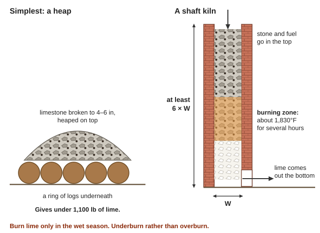

Guides › Shelter & building · Emergency · Index A–Z
Building walls, plasters and floors from local earth, straw, hemp and lime that stand up to Cascadia shaking, wet winters and fire season — plus burning your own lime and thatching sheds. The books are in Natural-Building\ (Cob-Earth, Straw-Bale-Light-Clay, Hemp-Lime, Plasters-Lime-Floors, Roofs-Thatch, Quake-Moisture). The soil ribbon test, adobe, rammed earth, log chinking and quake retrofits are in the Shelter guide; cordwood and earthbag how-tos are only in the Appropedia archive in Manuals\DIY-Appropedia.
⚠️ Rules that prevent the worst outcomes
- Never build earth or straw walls where floods reach. Cob walls collapsed outright when floodwater rose up them (DSIR 1922, p. 19). Our river soils flood (Soil Survey, p. 17).
- Keep the roof light and off the earth walls. The deadliest quake failure is walls falling out and the roof falling in (Minke, p. 13). One storey.
- Quicklime burns eyes and skin, and damp quicklime can start a fire. Goggles and gloves; store it airtight (NBS Circular 30, p. 10).
- No cement or plastic over earth or straw. They trap water and rot the wall from inside (NPS Brief 5, p. 5; BSD-112, p. 12).
- Loose straw is tinder. In fire season plaster bales promptly, sweep up straw daily, and never thatch a house with a stove (rule of thumb).
- Serpentine rock can carry natural asbestos. Never crush or sieve it dry (rule of thumb).
The key advice: in Cascadia country, build a braced timber frame that carries a light roof, and use earth or straw only as infill or a skin. Keep it one storey. Never build on floodplain soils.
Shaking forces grow with weight, and mud-walled houses have caused the most quake deaths (PA EQ Housing, p. 2). The safest layout puts the roof on its own posts (Minke, p. 38): if the walls fall, the roof stays up. Make brace joints strong — a diagonal that tears loose lets the wall go (p. 12).
| System | Quake | Wet winters | Fire | Insulation | Labor | Buy or make |
|---|---|---|---|---|---|---|
| Cob (load-bearing) | Poor — heavy | Good if kept dry | Good | Poor | Very high | Nothing |
| Straw bale in a frame | Good — light | Risky on north walls | Good once plastered | Excellent | Medium | Grain-straw bales |
| Light straw-clay | Good — ductile | Good — dries fast | Very good | Fair | High | Straw, clay, frame |
| Hempcrete | Good — light | Good | Untested here | Good | High | Lime binder, hemp |
| Wattle and daub | Best | Fair — needs patching | Fair | Poor | Low | Poles, sticks, clay |
| Earthbag | Fair with ring beam | Fair once plastered | Good once plastered | Poor | High | Bags, earth |
| Pressed blocks | Poor without steel bands | Good if stabilised | Good | Poor | High | Block press, lime |
| Cordwood | Poor — heavy | Fair — log ends rot | Fair | Fair | High | Mortar |
(Ratings summarise the sections below (rule of thumb).)
📚 Go deeper: Minke Earthquake-Resistant Houses — three ways to quake-proof earth walls; PA Earthquake Resistant Housing — why heavy houses kill. Pictures: a roof on its own posts, Minke p. 38, a fallen earth house and a quake-resistant quincha house, PA p. 1.
Minke's 10 mistakes that collapse earth houses (p. 12): (1) no ring beam; (2) lintels too short; (3) too little wall between a door and a window; (4) openings too close to corners; (5) no plinth; (6) windows too wide for their height; (7) walls too thin for their height; (8) poor mortar — part-filled joints, or joints over 15 mm (⅝ in); (9) too heavy a roof; (10) a roof not fixed to the walls.
Shape and size: square beats rectangle, circle beats square; split an L-shape into separate blocks (Minke, p. 9). Walls no taller than 11.5 ft, no unsupported wall longer than 23 ft, no gables, wall tops tied together (PA, p. 3).
Doors and windows (Minke, p. 41; PA, p. 3):

Where doors and windows may go in an earth wall (a diagram drawn for this guide).Ring beam: a closed timber ring with stiff corners, tied down by vertical wooden rods from the foundation up to a double timber ring beam (Minke, p. 35; PA timber bond-beam drawings). Block walls also need vertical bars at corners, openings and every 5 ft (CSEB manual, p. 12).
Siting: don't cut into a slope, build on one, or sit below a steep one; level a platform well back (Minke, p. 8). Avoid fill, river banks, landslide ground and slopes over 20° (CSEB, p. 2).
📚 Go deeper: Minke — plinths, ring beams and separate roofs, drawn; CSEB manual — bands and reinforcement step by step. Pictures: the ten mistakes drawn, Minke p. 12, good and bad openings, p. 41, where not to build, p. 8.
"Giv'un a gude hat and pair of butes an' 'er'l last for ever" — cob asks only for dry foundations and a good roof (Williams-Ellis, p. 46).
Boots — raise the wall off the ground:
| Wall | Stone or masonry base above ground |
|---|---|
| Cob | About 2 ft (Williams-Ellis, p. 56) |
| Earth walls in quake country | At least 12 in, on a footing 8 in wider than the wall and 16 in deep (Minke, p. 34) |
| Plastered straw bales | At least 6 in; 8–12 in better (BSD-112, p. 6) |
Don't lay a smooth damp-proof layer on the plinth — in a quake the wall slides off. Key it with vertical wooden rods every 12–20 in and a rough plinth top (Minke, p. 34).
Hat: an overhang, a pitched roof and nearby shelter can cut the rain on a wall tenfold (BSD-112, p. 5; how walls get wet). Minimum overhangs: 16 in on one storey, 24 in on two, with gutters (p. 11); here, go wider (rule of thumb). Hip the roof rather than build tall earth gables (Williams-Ellis, p. 57).
Splash zone: puddles and splash hollow out the base ("coving"); rising ground water makes walls erode and bulge (NPS Brief 5, p. 4). Grade the ground away, dig a gravel drain trench, keep shrubs off (p. 5).

The hat (overhang and gutter) and the boots (a high stone plinth) that keep an earth wall dry (a diagram drawn for this guide).Let the wall breathe:
📚 Go deeper: NPS Preservation Brief 5 — how water destroys earth walls; BSD-112 — rain control for straw walls. Pictures: plinth and foundation, Minke p. 34, Damp proofing.
Clay — the Pollard soils. Under the loam topsoil is red subsoil about 50% clay; the typical profile is half a mile south of Kerby (Soil Survey, p. 157). They cover high terraces and hillsides in the Illinois River and Deer Creek valleys (p. 18) and are rated "too clayey," with moderate shrink-swell (p. 223): a fat clay that needs lots of sand. Use the ribbon test in the Shelter guide and a shrink box — pack damp soil in a 2-ft box; more than ¼ in of shrinkage means it will crack (PA Mud Plasters, p. 4).

Shrink boxes after drying: a high-clay soil (top) and a sandy one (bottom) (PA Soil Blocks, p. 8).Be wary of serpentine clay. Brockman soils, on alluvial fans in the valley (photo), formed from serpentinite and are "very sticky and very plastic" (Soil Survey, p. 141). Expect bad cracking; make test bricks first, and keep it damp (rule of thumb).
Sand and gravel: the Takilma and Kerby low terraces are cobbly loam over extremely gravelly sand (p. 18). Screen out stones over ¼ in (5–6 mm) for blocks and plaster (PA Soil Blocks, p. 10).
Straw, never hay. Building straw is the dead stalks of wheat, barley or oats (BSD-112, p. 3). Hay molds (rule of thumb), and leftover grain draws mice and birds that tunnel in (Beard, p. 80). Grain straw comes from the Klamath Basin and Willamette Valley; buy tight, dry, bright bales and store them off the ground under cover (rule of thumb).
Limestone and marble: see the deposit table under Making lime.
📚 Go deeper: Josephine County Soil Survey — maps of clay and gravel; PA Soil Blocks — shrink and drop tests. Pictures: shrink-test photos: clayey vs. sandy soil, PA Soil Blocks p. 8, Serpentinite.
Cob is mostly aggregate held by about one-fifth clay: old Devon cob tested at 24% stones, 52% sand, 21% clay, about 1% straw (DSIR, p. 16). Here, use it for infill between frame posts, garden walls and small sheds — not tall load-bearing walls. Cob; old Devon cob cottages.
Season: Devon built March to September (Williams-Ellis, p. 56). Here, build May–September and get the roof on before the October rains (rule of thumb).
Labor: eight mostly green men took three months to raise one cottage's walls (p. 49).
📚 Go deeper: Williams-Ellis Cottage Building in Cob — mixing, lifts, finishing; DSIR Building in Cob and Pisé — regional methods and why cob fails. Pictures: cob walls ready for mud render, PA Mud Plasters p. 1, clay-lump and mud-wall houses, DSIR p. 31.
Bales (BSD-112, p. 3): two-string 18 × 14 in; three-string 24 × 16–18 in; 32–40 in long; at least 7 lb per cubic foot. Straw is fine up to about 20% moisture; rot begins at 25–30% (CMHC 00-103, p. 2). Straw-bale construction.
How it works: plaster skins (lime or cement 1–1½ in, earth 2–3 in) carry 95–99% of the load; the bales insulate (BSD-112, p. 4). Here, use bales as infill in a timber frame (rule of thumb).
Building it: toe-up 6 in or more, with a capillary break between foundation and plaster (CMHC, p. 3); wide overhangs and gutters; careful flashing at window and door sills and heads, where rain gets in (BSD-112, p. 11); earth or lime plaster straight onto the straw.
The wet-coast warning (CMHC 00-103, pp. 2–3): the walls that rotted had two or more of these: minimal overhangs; no capillary break; heavy indoor wetting; bales below grade; poor splash protection; a north-facing wall. Straw in floors rotted to "nothing but a pile of black compost." On the rainy coast a north wall stayed damp from humid air alone; CMHC urges "extreme caution" with north walls in high-rain climates. Never put straw under a floor.
Fire: a wall of 7.5 lb/ft³ wheat bales with 1 in of earth plaster each side passed a 1-hour fire test and the hose stream. The plaster: 3 parts clay, 2 chopped straw, 6 sand, in two ½-in coats (Intertek, pp. 13, 16).
Fire-season site rules (rule of thumb): plaster within days; rake up loose straw every evening; keep water and a hose on site; no grinding or welding near straw; store spare bales well away from buildings — FEMA puts sheds holding combustibles 50 ft or more from a house (FEMA P-737, p. 23).
📚 Go deeper: BSD-112 Building Science for Strawbale — moisture, overhangs, plaster; Intertek fire test — photos and plaster mix. Pictures: wetting and drying of straw walls, BSD-112 pp. 6, 8, fire-test photos, Intertek appendix D.
Light straw-clay (slip-straw) (CMHC 05-109, pp. 2–3; Light clay): clay-coated straw packed into forms around a timber frame. It carries no load, dries fast (no vapour retarder over it), and insulates R-0.8 to 2.1 per inch. It settles about 7% as it dries, so top it up. Four hours of propane torch burned only 2 in in, and it is ductile — it soaks up quake energy. Method (general practice): dip straw in thick clay slip, tamp it into 12-in forms on the frame, and let it dry through a summer before plastering.
Hempcrete (Hempitecture, pp. 6, 9, 11; Hempcrete): binder (lime plus pozzolan) to hemp hurd 1.5 to 1 by weight — 50 lb of binder, 33 lb of hurd, about 6 gallons of water. A squeezed ball should hold when tossed 2–3 ft. Use within 30 minutes, out of the sun; place 2 in at a time, tamping hardest along the forms. Walls are 8–12 in, R-2.2 to 2.5 per inch, and need diagonal bracing since they can't be sheathed in plywood. Gloves and eye protection (p. 3). Reality (general practice): hurd means retting and breaking stalks by hand, and the binder needs lime.
Wattle and daub (quincha): poles and woven sticks packed with earth — the most flexible earth system; one survived a heavy Guatemala quake (Minke, pp. 13, 28; a wattle-and-daub store). It cracks as the wood moves and holes harbor insects, so patch it yearly. Keep poles out of the soil, where they rot (PA, p. 3).
Earthbags: test houses used jute or cotton tubes of earth, given 4 coats of lime against rot, with a ring beam and the roof on separate posts (Minke, p. 30). Plastic bags rot in sunlight within months — plaster them soon (general practice). Earthbag construction.
Pressed blocks (Compressed earth block): the mix is right when a ball dropped from shoulder height breaks into a few pieces (PA Soil Blocks, p. 10; pressing a block). A 50%-clay soil like Pollard subsoil needs lime: try blocks at 5, 7 and 9% lime by weight (p. 8). Keep lime blocks damp a week and don't use them for 37 days (p. 12).
Cordwood: seasoned log rounds laid crosswise in mortar — heavy, unreinforced, so for sheds, not houses (general practice). Cordwood construction.
📚 Go deeper: Hempitecture manual — forms and packing; Minke — wattle and daub, earth-filled bags. Pictures: earth-filled cloth hoses, Minke p. 30, CINVA-Ram block press, Peace Corps p. 99, Rammed earth.
Earth plaster (PA Mud Plasters, pp. 3–5; Earthen plaster):
Lime plaster and stucco:
Limewash yearly to fill hairline cracks before they let water in (NPS Brief 22, p. 7); one coat lasts about a year (Irish guide, p. 50). Make the first coat watery so it soaks 2–3 mm in (Minke, p. 49). Tint with ochre or umber (rule of thumb).
Earthen floors (Peace Corps, pp. 139–141):

The layers of an earthen floor (a diagram drawn for this guide).Farm-made stabilisers (PA Additives to Clay, pp. 3–4; a bark-stabilised render): dung (up to a third, fermented several days); horse urine; fresh blood with lime; casein from soured milk; glue from boiled skins and bones; linseed oil; oak bark tannin (here, oak or tanoak (rule of thumb)). Use animal products only from healthy animals — anthrax. Often none is needed.
📚 Go deeper: PA Mud Plasters and Renders — mixes and two-coat work; NPS Brief 21 — three-coat lime-and-hair plaster. Pictures: kinds of lath, NPS Brief 21 p. 4, Lime mortar.
Mortar mixes, concrete, lime concrete and pozzolans are in Mortar, Concrete & Roads.
⚠️ Lime burns
- Quicklime is hazardous (PA Lime, p. 1) and "highly caustic" (Irish guide, p. 50). Alkali burns, as from plaster and cement, are worse than acid burns (ATP 4-02.11, p. 118).
- Lime in an eye: flood it with clean water at once and keep rinsing at least 20 minutes (p. 118). Plain water only.
- Goggles, gloves, long sleeves. Slake in an open tub, never a closed one; keep children away (rule of thumb).
- Damp quicklime heats up and can start a fire. Store it airtight (NBS Circular 30, p. 10).
- Burn lime only in the wet season, never in fire season (rule of thumb).
Stone: at least 95% calcium carbonate; marble and shells work too (PA Lime, p. 1). Known deposits (DOGAMI Ore Bin 1958, p. 5):
| Deposit | Where | Notes |
|---|---|---|
| Lime Rock (Holton Creek) | ~2 mi southeast of Kerby | Marble, over 98% |
| Elder Creek | Near Takilma | Burned for the old Takilma smelter |
| Jones Marble Quarry | ~4 mi west of Williams | Over 99% |
| Turvey | ~4 mi west of Williams | 95% |
| Grizzly Gulch | 2 mi south of Oregon Caves | Small; may now be inside the park, which was enlarged in 2014 — check before digging (rule of thumb) |
| Oregon Caves | National monument and preserve | "Not available" — never quarry there |
Get the landowner's or agency's permission (rule of thumb).
Burning (PA Lime, pp. 1–2; Lime kiln): break stone to 4–6 in and hold it at about 1,830°F (1,000°C) for several hours. The simplest burn — a ring of logs with limestone heaped on top — gives under 1,100 lb of lime (loading a kiln). A shaft kiln must be at least 6 times as tall as it is wide (PA Kiln, p. 1; building drawings); stone and fuel go in the top, lime comes out the bottom. A wood-fired kiln used about ½ cord per ton of lime (NBS Circular 337, p. 117; old shaft kilns). Underburn rather than overburn: overburned lime is yellow, heavy and won't slake; underburned stone can go back in (p. 13).

The simplest heap burn, and a shaft kiln fed from the top and emptied from the bottom (a diagram drawn for this guide).Slaking (NBS Circular 337, p. 119):
📚 Go deeper: PA Small Vertical Shaft Lime Kiln — drawings and a day-by-day build; PA Testing Lime — field tests for homemade lime. Pictures: a working shaft kiln, PA Lime p. 2, Calcium hydroxide.
Fire: most thatch fires start at the chimney — cracked flues, sparks, stovepipes through the thatch (pp. 61–62). Oregon calls even untreated shakes "not desirable" (Oregon BCD, p. 3). Thatch only sheds 50 ft or more from the house (FEMA P-737, p. 23), never a dwelling with a stove. Thatching.
📚 Go deeper: Irish Thatch guide — materials, fixing, repair, fire prevention; Beard — a simple thatched roof. Pictures: fixing a course with scollops, Irish guide p. 31.
| Problem | Likely cause | What to do |
|---|---|---|
| Cracks at corners | Earth swells and shrinks (Irish guide, p. 50) | Round new corners; fill with earth plaster, limewash |
| Diagonal cracks after a quake | Shear (Minke, p. 13) | Stay out until the roof is propped; rebuild with a ring beam and narrower openings |
| Plaster cracks all over | Too much clay, or dried too fast (PA Mud Plasters, p. 3) | More sand and straw; shade and mist; a sandier second coat |
| Damp, hollowing base | Splash, puddles, rising damp (NPS Brief 5, p. 4) | Gutters, regrade, gravel trench, clear plants; never patch with cement |
| Musty smell in a straw wall | Wet straw: leaks, splash, bathrooms (CMHC, p. 3) | Stop the water; open a small hole to check (rule of thumb); replace black straw |
| Plaster falling off | Cement over earth, or no key (NPS Brief 5, p. 3) | Strip it; wet and score the wall; replaster in earth or lime |
| Lime won't slake | Overburned (NBS 337, p. 13) or spoiled in damp air (NBS 30, p. 10) | Discard yellow, heavy lumps; reburn cores; store airtight. Spoiled lime fizzes in dilute acid (PA Testing Lime, p. 3) |
📚 Go deeper: NPS Preservation Brief 5 — diagnosing water damage; Irish Thatch guide — repairing earth walls. Pictures: patching a hole in plaster, NPS Brief 21 p. 9, a quake-damaged earth house that stood, Minke p. 13.
📚 Go deeper: Minke — plasters and paints that work on earth; NPS Brief 5 — why cement fails on earth walls.
Look before you try it. 🖼️ = drawings in the books on this drive; 📷 = photos in the offline Wikipedia.
Quake-safe layout
Local materials
Walls
Plasters and floors
Lime and thatch